StudioRecon 来自首尔大学,是 SIGGRAPH Conference Papers 2026 的接收论文(DOI 10.1145/3799902.3811165),也是这五篇里唯一放出完整源码的一篇。
论文把目标场景命名为 in-the-wild studio capture,特征有三:相机稀少且低重叠(相邻相机观察的区域基本不重叠);多个交互的人且频繁遮挡;相机未预标定(论文明确说不假设预标定,相机参数由前馈重建模型估计)。论文列举的现实场景是体育馆、医疗机构与家庭环境;作为对照,专业体积捕捉系统需要几十到几百台相机。
稠密 4DGS 方法(Dyn-3DGS、4DGS、FreeTimeGS 等)假设稠密相机覆盖且视角大量重叠。稀疏视角方法(DNGaussian、DropGaussian、Deceptive-NeRF/3DGS 等)虽降低了相机要求,但仍依赖相邻相机之间「大部分共享可见性」来做对应匹配。
专门针对 90° 分布极端低重叠场景的代表是 MonoFusion。论文承认它面向了正确的场景,但指出——它在欠观测区域仍有明显伪影,因为「人体与背景的误差在共享表示里纠缠在一起」。
以 ReCamMaster、GEN3C、Diffuman4D、CAT4D 为代表的相机可控视频扩散模型,看起来是「直接合成新视角」的另一个选项。
但论文的批评很直接:在低重叠、多人的设定下,它们对移动的人产生几何不一致的结果(论文把这个证据放在附录 G)。这是一个「用生成模型替代重建」的失败模式——人不是场景的一部分,人有动作。
研究对象是「$N$ 台同步相机、$T$ 个时间步、多个人」的动态场景重建。输入视频 $\{I_{n}^{t}\}_{n=1,t=1}^{N,T}$,其中 $I_{n}^{t}\in\mathbb{R}^{H\times W\times 3}$。目标有两个:
这个设定带来两个关键挑战:稀疏视角覆盖导致大片区域未被观测;在有限观测与自遮挡下重建动态人体是病态的。
| 符号 | 含义 | 取值 / 备注 |
|---|---|---|
| $N$ | 输入相机数 | 4(所有实验) |
| $T$ | 时间步数 | 每序列 121 帧 |
| $I_{n}^{t}$ | 第 $n$ 台相机第 $t$ 时刻的图像 | $\mathbb{R}^{H\times W\times 3}$ |
| $\{M_{n}^{1}\}$ | 首帧的人体分割掩码 | SAM3,文本 prompt "person" |
| $L$ | 合成的新视角数 | 481,分辨率 $1280\times704$ |
| $\mathbf{p}$ | 检测到的某人的 3D 世界位置 | 由胯部 2D 位置 $(u,v)$ 与深度反投影得到 |
| $A(a,b)$ | 两个跨视角检测之间的亲和度 | 见式(1) |
| $w_p,\,w_\theta$ | 空间 / 姿态相似度的权重 | $w_p=0.9$,$w_\theta=0.1$ |
| $\mathbf{J}^{w},\mathbf{V}^{w}$ | 三角化得到的世界空间关节 / 顶点 | — |
| $\mathbf{J}^{s},\mathbf{V}^{s}$ | SMPL 模型产生的关节 / 顶点 | — |
| $s^{*}$ | 逐人全局尺度因子 | 由骨长匹配估计 |
| $\bm{\theta},\bm{\beta}$ | SMPL 姿态 / 形状参数 | — |
| $\bm{\mu}_{c}$ | canonical 空间的高斯中心 | — |
| $w_{b}(\bm{\mu}_{c})$ | 从预计算体素网格查询的蒙皮权重 | $64^{3}$ 体素网格 |
| $\mathbf{G}_{b}^{t}$ | 第 $b$ 根骨骼在 $t$ 时刻的变换矩阵 | $\in SE(3)$ |
| $\hat{I}_{t}$ / $O_{t}$ | 渲染合成图 / 增强后的输出 | — |
| $F_{t\to t-1-i}$ | 向后光流(RAFT) | — |
| $c_{i}$ | 逐像素 warp 置信度 | $c_i=\max(0,1-e_i/\tau_e)$ |
| 阶段 | 做什么 | 关键依赖 |
|---|---|---|
| 1 · 稀疏到稠密视角合成 | 估计相机与深度,生成 $L=481$ 个新视角补充视角覆盖 | Pi3(相机/深度)+ MoGe(单目深度)+ SAM3(掩码)+ GEN3C(视图合成) |
| 2 · 多视角人体姿态估计 | 逐视角检测跟踪 → 跨视角身份关联 → 三角化 → SMPL 拟合 | CoMotion + Hungarian + Huber 鲁棒优化 |
| 3 · 解耦高斯重建 | 背景用合成视角优化;人体用原始视频优化 | 3DGS + SMPL 蒙皮 + 时间变形 MLP |
| 4 · 递归增强 | 把分别渲染的人体与背景调和成时序一致输出 | Difix3D+(单步扩散)+ RAFT 光流 |
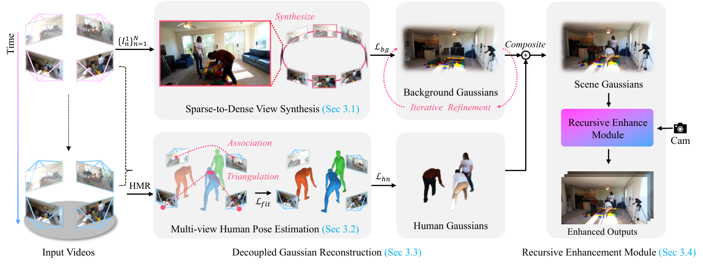
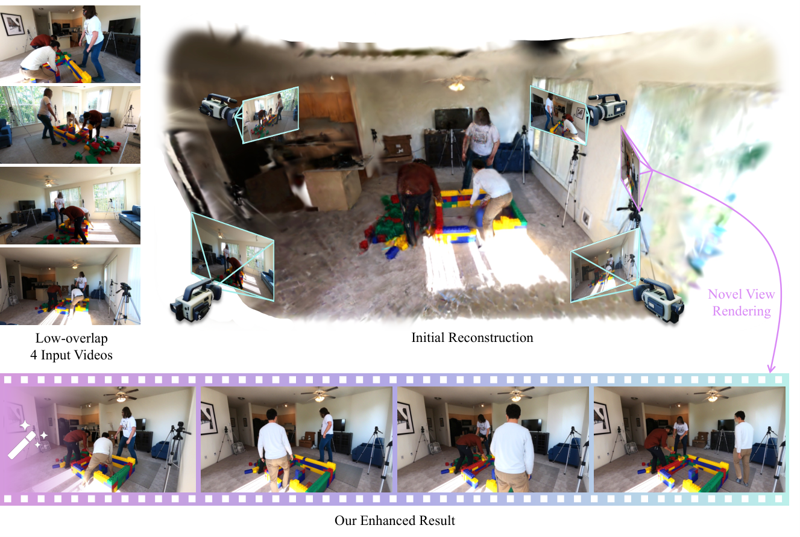
因为相机是静态的,论文把前馈 3D 重建模型 Pi3 作用在首帧($t=1$)的全部 $N$ 台相机上,得到稠密点云、深度图与相机位姿,并复用到所有时间步。对后续时间步,用单目深度模型 MoGe 估深度并对齐到首帧深度以保持尺度一致。
为了在初始化背景高斯时不带入人体,用分割模型(SAM3)得到掩码 $\{M_{n}^{1}\}_{n=1}^{N}$,只保留未被掩蔽且深度置信度高于阈值的像素来提取背景点云。
在 $N$ 个输入视点之间插值:旋转用球面线性插值(SLERP),平移用线性插值,得到 $L$ 个新相机位姿(详见附录 A)。
用相机可控视频扩散模型 GEN3C 沿插值出的相机轨迹合成新视角:输入是 $N$ 张首帧图像、深度图与目标位姿。同时获得每个合成视角的人体掩码——这些掩码在背景高斯优化时用于排除人体区域。
准确的人体重建需要在统一世界坐标系下估计身体姿态,而这要求先在跨视角的检测之间建立同一人的对应。在 in-the-wild studio capture 里,传统的基于外观的匹配变得不可靠,因为外观在不同视点之间变化剧烈(尤其在低重叠设定下,不同相机看到的是人的不同部位)。
对每个视角 $n$,用单目姿态估计器 CoMotion 得到 SMPL 姿态 $\bm{\theta}$ 与形状 $\bm{\beta}$ 估计、2D 关键点,以及视角内的跨时间身份跟踪。
利用标定好的相机几何把检测提升到 3D,再基于空间邻近度与姿态相似度做匹配。对每个检测到的人,用 §4.1 的深度与相机参数把 2D 胯部位置 $(u,v)$ 反投影得到 3D 世界位置 $\mathbf{p}$。
定义两个来自不同视角的检测 $a$ 与 $b$ 之间的亲和度为空间与姿态相似度的加权组合:
其中 $\mathbf{p}$ 是 3D 世界位置,$\bm{\theta}$ 是 SMPL 姿态参数,$\sigma$ 是尺度参数,且设 $w_{p}=0.9$、$w_{\theta}=0.1$。论文对为什么需要这个组合给了机制解释:「当深度噪声大、或人们做相似动作时,这个组合提供鲁棒性」。
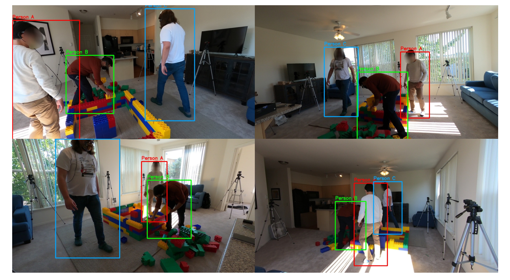
给定跨视角对应关系,对全部视角的 2D 关键点做三角化,得到用于 SMPL 拟合的 3D 关节与顶点位置。为处理遮挡与检测噪声,使用带 Huber 损失的鲁棒优化。对每个点 $k$,求解使其在所有 $N$ 个视角上的重投影误差最小的 3D 世界位置:
其中 $\mathbf{P}^{w}_{k}$ 是三角化得到的 3D 位置,$\mathbf{x}_{n,k}$ 是视角 $n$ 中对应的 2D 关键点(关节或顶点),$\pi_{n}$ 是投影函数,$\rho$ 是用于抗离群点的 Huber 损失。
三角化得到的 3D 点位于场景坐标系中。论文用SMPL 骨架模板的骨长与三角化出的骨长做匹配来求一个尺度因子:
其中 $(i,j)$ 是构成一根骨骼的相邻关节索引,$\mathcal{B}$ 是可靠骨骼对集合,$\mathbf{J}^{w}$ 是三角化的世界空间关节,$\mathbf{J}^{s}$ 是模板 SMPL 关节位置。逐人聚合跨帧结果得到全局尺度。
用 3D-to-3D 优化把 SMPL 参数拟合到三角化得到的 3D 关键点上——论文明确说这样做是为了避开 2D 投影拟合固有的深度歧义。优化姿态 $\bm{\theta}$ 与形状 $\bm{\beta}$ 以最小化:
其中 $\mathbf{J}^{s}(\bm{\theta},\bm{\beta})$ 与 $\mathbf{V}^{s}(\bm{\theta},\bm{\beta})$ 是 SMPL 人体模型产生的关节与顶点,$\mathbf{J}^{w}$ 与 $\mathbf{V}^{w}$ 是三角化得到的观测。关节项对齐骨架姿态,顶点项提供表面级监督、使体型估计成为可能。最后对拟合出的姿态参数施加指数平滑以保持时序一致。
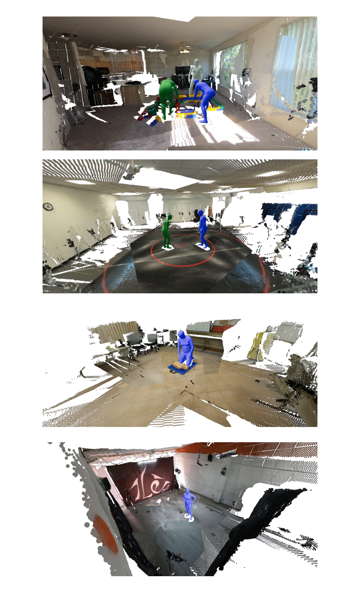
拿到相机参数、稠密新视角与 SMPL 参数后,场景被重建为「静态背景 + 动态人体高斯」的组合。背景与人体受益于不同的优化策略:背景需要稠密视点覆盖但只需要单个时间步;人体需要时序监督但尽管只有部分观测、仍可由 SMPL 先验约束。因此解耦重建。
用点云、$L$ 个合成新视角,以及对应的人体掩码,在 $t=1$ 时刻初始化并优化背景高斯。因为合成视角中包含人体,优化时把这些区域掩蔽掉:
其中 $M$ 是膨胀后的人体掩码,$\mathcal{L}_{den}$ 正则化不透明度以防止漂浮点(floaters)。
合成视角可能对某些区域采样不足,尤其是斜视角下的地板与天花板。
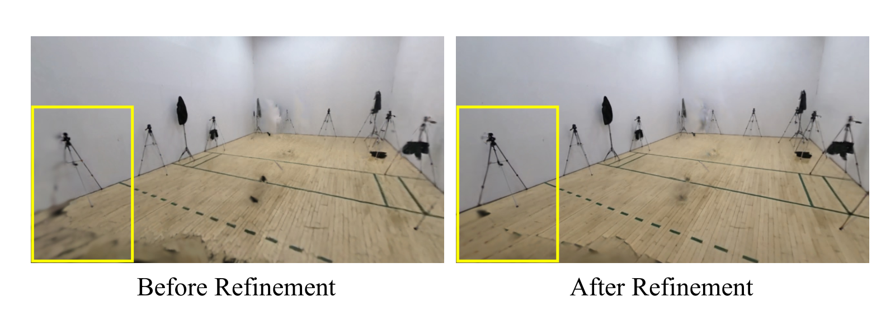
人体高斯以 §6 得到的 SMPL 参数为初始化,在原始 $N$ 路输入视频、全部 $T$ 个时间步上优化,联合精修姿态并从时序变化中学习动态外观。
每个人用规范姿态下的高斯表示,初始化在 SMPL 网格表面。canonical 高斯捕捉人物特有的外观,而姿态相关形变由骨架蒙皮处理。
要在时刻 $t$ 渲染一个人,用线性混合蒙皮(LBS)把 canonical 高斯形变到目标姿态。对 canonical 空间中的每个高斯中心 $\bm{\mu}_{c}$:
其中 $w_{b}(\bm{\mu}_{c})$ 是从预计算的体素网格查询得到的蒙皮权重(该网格由 SMPL 模型推导,$64^{3}$),$\mathbf{G}_{b}^{t}\in SE(3)$ 是 $t$ 时刻的骨骼变换矩阵。
为捕捉细粒度的外观变化,用一个时间 MLP预测逐高斯的高斯颜色与不透明度残差:
其中 $\gamma(\cdot)$ 是位置编码,multires=10,因此空间坐标 $\bm{\mu}_{c}$ 得到 63 维、归一化时间 $t$ 得到 21 维。残差加在渲染前的基础高斯属性上。网络是 8 层 MLP、256 隐藏单元、第 4 层带 skip connection,在第 3,000 迭代启用。
各项含义(附录 D 给出的具体权重):L1($\lambda=0.8$)与 SSIM($\lambda=0.2$)度量光度重建;LPIPS($\lambda=0.1$)提供感知监督;mask 损失($\lambda=0.01$)监督渲染轮廓;密度正则($\lambda=0.1$)防止伪高斯;姿态正则($\lambda=50.0$)强制 SMPL 参数的时序平滑。高斯属性与 SMPL 姿态参数被联合优化。
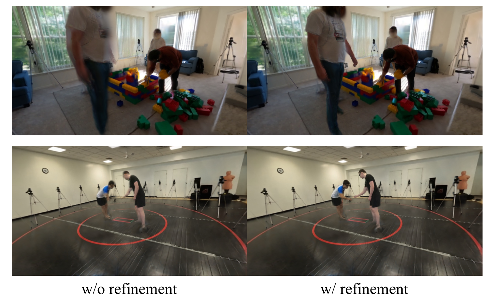
即使重建质量已经优于既有方法,渲染输出仍会有轻微伪影:漂浮点、欠观测区域的模糊、姿态不准带来的人体伪影。此外,由于人体与背景是分别优化的,合成时纹理与光照也可能略有差异。
论文用一个为高斯精修设计的单步扩散模型(Difix3D+)处理这个问题。它接收两个输入:渲染图与提供外观指导的参考图。对每一帧,用渲染合成图作为输入、用附近的原始帧作为参考。
论文的洞察来自「视频生成的共享噪声先验」这一思路:既然单步模型把输入当作 $t=200$ 时刻的加噪样本,那么把前一帧的信息注入进来,等价于注入一个共享的噪声先验。
以运动自适应权重,把每帧渲染输入与经光流 warp 过的历史输出做指数移动平均(EMA)混合:
| 符号 | 含义 |
|---|---|
| $\tilde{I}_{t}$ | 喂给扩散模型的混合后输入 |
| $\hat{I}_{t}$ | 渲染合成图 |
| $w_{total}$ | 总体注入强度 |
| $O_{t-1-i}$ | $i+1$ 帧之前的精修输出 |
| $\bar{w}_{i}$ | 归一化的 EMA 权重,对 $K$ 个历史帧指数衰减 |
| $F_{t\to t-1-i}$ | 用 RAFT 计算的向后光流 |
| $c_{i}=\max(0,1-e_{i}/\tau_{e})$ | 基于 warp 误差 $e_{i}$ 的逐像素置信度 |
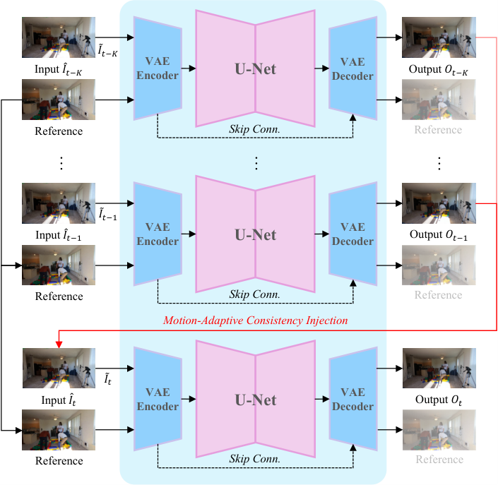
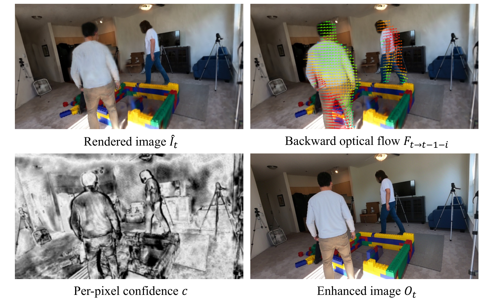
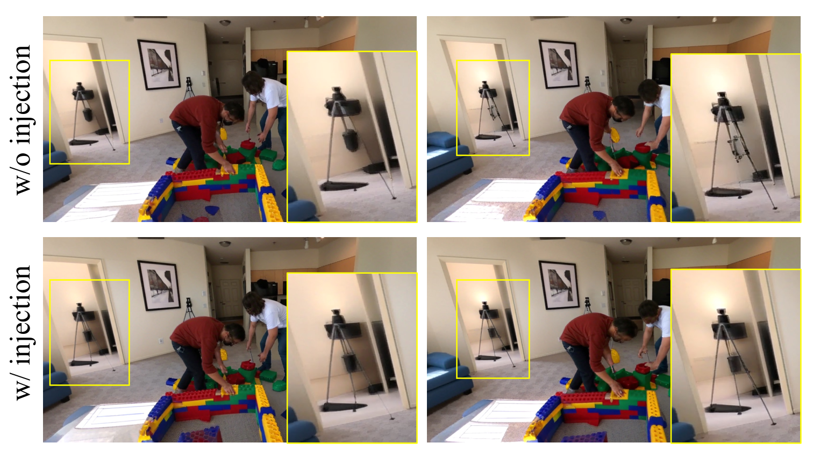
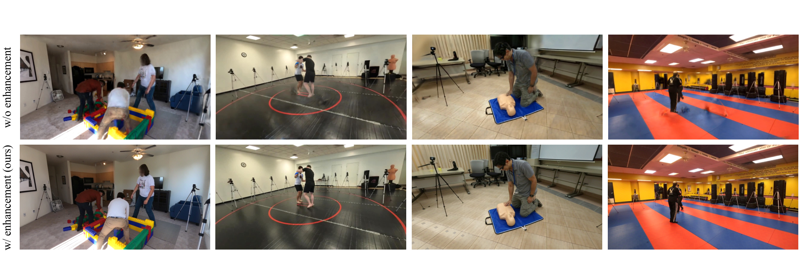
| 项 | 内容 |
|---|---|
| ① 结构 | 单步扩散模型 Difix3D+;输入 = 渲染合成图 + 参考原始帧;输出 = 增强图。前置:RAFT 光流 + warp + 逐像素置信度 + EMA 混合 |
| ② 数学 | 式(7);置信度 $c_i=\max(0,1-e_i/\tau_e)$ |
| ③ 前向 | 渲染合成图 → 与 warp 历史做 EMA 混合 → 单步去噪($t=200$)→ 增强输出;输出又成为下一帧的历史 |
| ④ 图示 | 见上文 Mermaid 与 Figure 3/11 |
| ⑤ 监督 | 无训练——直接使用预训练的单步扩散模型(论文将其作为可插拔精修模块) |
高斯表示支持从任意相机轨迹渲染。论文展示两个例子:dolly zoom(向主体平移同时加宽 FOV)与振荡轨迹(横向周期运动制造视差),只需定义期望的相机路径。代码里对应 --trajectory orbit/dolly/static/smooth 等预设。
解耦的流水线 + 人体参数使「演员替换」成为可能:给定一张参考图,用前馈模型(LHM)生成一个新的高斯人体,合成进已有背景,并把原本的 SMPL 姿态迁移到新身份上。渲染增强时,通过编辑原始帧插入新人来构造单张参考图。由于人体与背景是独立重建的,这一步不需要修改场景。
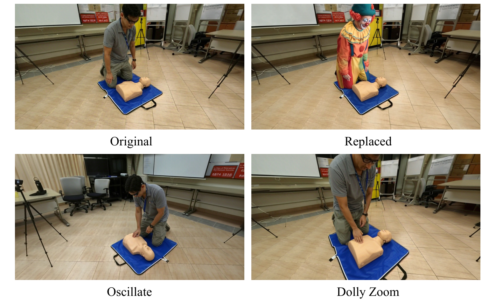
file:line 级佐证的。代码来自 github.com/sisyphm/StudioRecon(Python,仓库约 1836 KB,pushed 2026-07-28,非商用许可)。本节的数值分两类:论文附录给的与源码读到的,分别标注。凡两者不一致处,单列在 §12。
| 项 | 取值 | 出处 |
|---|---|---|
| 输入相机数 $N$ | 4 | 附录 A |
| 人体分割 | SAM3,文本 prompt "person" | 附录 A |
| 相机参数与逐帧深度 | Pi3,置信度阈值 0.1 | 附录 A |
| 掩码膨胀 | 21 像素(确保人体区域被完全覆盖) | 附录 A |
| 合成新视角 | $L=481$ 个,分辨率 $1280\times704$,GEN3C guidance scale 1.0 | 附录 A |
| 相机插值 | 旋转 SLERP + 平移线性插值 | 附录 A |
| 新增数据集相机选择 | 4 训练相机约 90° 间隔;评测用 4 台中间角度相机(约 45°);每序列 121 帧,1–3 人 | §4.1 |
| 项 | 取值 | 出处 |
|---|---|---|
| 逐视角检测/跟踪 | CoMotion(提供 SMPL 姿态形状、2D 关键点、视角内跟踪) | 附录 B |
| 跨视角关联 | 匈牙利算法,参考时间步 $t_0=0$;权重 $w_p=0.9$(空间)、$w_\theta=0.1$(姿态);距离阈值 0.3 m | 附录 B |
| 胯部反投影 | 式(S1):$\mathbf{p}_{world}=R_{n}^{-1}(d\cdot K_{n}^{-1}[u,v,1]^{\top}-\mathbf{t}_{n})$ | 附录 B |
| 三角化 | 鲁棒 DLT + Huber 损失 | 附录 B |
| SMPL 拟合 | 3D-to-3D 优化,30 迭代,$\beta$ 正则系数 10.0 | 附录 B |
| 尺度对齐 | 骨长匹配,L-BFGS 优化 100 迭代 | 附录 B |
| 时序平滑 | 双向指数平滑($\alpha=0.5$)+ 高斯滤波($\sigma=1$) | 附录 B |
| 项 | 取值 | 出处 |
|---|---|---|
| 迭代数 | 7,000 | 附录 C |
| 球谐阶数 | 3 | 附录 C |
| 损失权重 | L1 $\lambda=0.7$;SSIM $\lambda=0.3$;LPIPS $\lambda=0.1$;密度正则 $\lambda=0.1$ | 附录 C |
| 位置学习率 | $1.6\times10^{-4}\to1.6\times10^{-6}$ | 附录 C |
| 密化策略 | 每 500 迭代一次,直到第 3,000 迭代;梯度阈值 0.0002 | 附录 C |
| 真值视角加权 | $w_{i}=1+\lambda_{gt}\cdot\frac{1}{2}(1+\cos(\pi d_{i}/d_{max}))$,$\lambda_{gt}=2$ → 最高 3× | 附录 C 式(S2) |
| 迭代精修 | 第 3,500 迭代加入 240 个新视角,高度振荡 ±15% 场景半径,经 Difix3D+ 精修,损失权重 0.7 | 附录 C |
| 项 | 取值 | 出处 |
|---|---|---|
| 迭代数 | 10,000 | 附录 D |
| 球谐阶数 | 2 | 附录 D |
| 损失权重 | L1 $\lambda=0.8$;SSIM $\lambda=0.2$;LPIPS $\lambda=0.1$;mask $\lambda=0.01$;密度正则 $\lambda=0.1$;姿态正则 $\lambda=50.0$ | 附录 D |
| 位置学习率 | $1.0\times10^{-3}\to2.0\times10^{-6}$ | 附录 D |
| 密化 | 第 1,500 迭代终止(因为人体已由 SMPL 网格顶点初始化) | 附录 D |
| LBS 蒙皮权重 | 从 $64^{3}$ 体素网格查询 | 附录 D |
| 时间变形网络 | 第 3,000 迭代启用;8 层 MLP、256 隐藏单元、第 4 层 skip;位置编码 multires=10(空间 63 维、时间 21 维) | 附录 D |
| 项 | 论文附录 E | 源码实读(file:line) |
|---|---|---|
| 单步去噪时间步 | $\mathbf{t=200}$ | difix_final.py:21 DEFAULT_TIMESTEP = 180 |
| 注入强度 | $\alpha=\mathbf{0.3}$ | difix_final.py:23 DEFAULT_INPUT_INJECT_ALPHA = 0.5;recursive.py:1169 alpha: float = 0.2 |
| 注入帧数 | 3 帧 | difix_final.py:24 INJECT_FRAMES = 3 ✔ 一致 |
| 衰减因子 | decay 0.5 | recursive.py:1170 decay: float = 0.5 ✔ 一致 |
| warp 误差阈值 | $\tau_{e}=30$(0–255 尺度) | recursive.py:1182 simple_max_error: float = 30.0 ✔ 一致 |
| 置信度图平滑 | 高斯模糊 kernel 11 | recursive.py:809 compute_warp_confidence(blur_kernel=11) ✔ 一致 |
| 光流 | RAFT | recursive.py:1183 flow_model: str = 'raft' ✔ 一致 |
| 扩散模型 | Difix3D+ | difix_final.py:20 MODEL_NAME = "nvidia/difix_ref" |
| Prompt | 论文未给 | difix_final.py:22 PROMPT = "remove degradation" |
| 随机种子 | 论文未给 | difix_final.py:25 SEED = 42 |
| 运动/静态阈值 | 论文未给 | recursive.py:1040-1042 static_threshold=1.5、motion_threshold=6.0、dilation_kernel=11 |
config/gaussian_training.py)| 参数 | 源码值 | 位置 | 与论文对照 |
|---|---|---|---|
| 总迭代数 | 15_000 | :181 | 论文:背景 7,000 + 人体 10,000(分开)。见 §12 |
| 位置学习率(背景) | 0.00016 → 0.0000016 | :192-193 | ✔ 对应论文 $1.6\times10^{-4}\to1.6\times10^{-6}$ |
| 场景球谐阶数 | sh_degree = 3 | :111 | ✔ 与附录 C 一致 |
| 人体球谐阶数 | human_sh_degree = 2 | :133 | ✔ 与附录 D 一致 |
| SMPL 网格细分 | upsample_smpl_subdivisions = 2 | :138 | 注释给出「约 110k 顶点」 |
| 启用形变 | start_deform = 3000 | :148 | ✔ 与附录 D 的「第 3,000 迭代」一致 |
| SMPL 密化 | iter_smpl_densify = 1500 | :142 | ✔ 与附录 D 的 1,500 一致 |
| 密度化梯度阈值 | densify_grad_threshold = 0.0002 | :186 | ✔ 与附录 C 一致 |
| 姿态正则 | lambda_pose_reg = 50.0 | :211 | ✔ 与附录 D 一致 |
| SSIM / mask / LPIPS / 密度正则 | 0.2 / 0.01 / 0.1 / 0.1 | :202-205 | ✔ 与附录 D 的人体一致 |
| 人体 SMPL 加速正则 | lambda_human_smpl_acceleration = 80.0 | :216 | 论文未提及 |
| 人体 SMPL 平滑 | lambda_human_smpl_smooth = 0.25 | :215 | 论文未提及 |
| 阶段 | 耗时(单张 NVIDIA A6000) |
|---|---|
| 视图合成(GEN3C) | 50 分钟 ← 瓶颈 |
| 人体姿态估计 | 3 分钟 |
| 背景重建 | 30 分钟 |
| 人体重建 | 40 分钟 |
| 递归增强 | 3.3 秒 / 帧 |
| 端到端(121 帧、1–3 人) | 约 130 分钟(1 GPU)/ 约 60 分钟(8 GPU) |
LICENSE.md 明确「Released for non-commercial research and evaluation use」。第三方组件、模型权重、数据集各有自己的许可且不随仓库分发。.gitmodules + scripts/bootstrap_third_party.sh 管理,docs/CHECKPOINTS.md 说明权重获取。但注意:阶段需要跑在不同的 conda 环境里,因为上游项目钉了互不兼容的 Torch/CUDA 版本(README 明确写了这一点)。这一节是本笔记的原创核查。因为本篇是五篇里唯一有源码的,可以直接把「论文声称的」与「代码里写的」逐项对照。以下差异均已定位到具体文件与行号。
| 参数 | 论文附录 E | README | 源码 |
|---|---|---|---|
| 去噪时间步 | t=200 | timestep 180 | difix_final.py:21 DEFAULT_TIMESTEP = 180 |
| 注入强度 $\alpha$ | 0.3 | alpha 0.5 | difix_final.py:23 = 0.5;但 recursive.py:1169 的函数默认值是 0.2 |
inject_previous_outputs_ema 的签名默认是 0.2,而 difix_final.py 把 CLI 的 --input-inject-alpha 默认设为 0.5 并传进去。也就是说实际运行时用的是 0.5(CLI 默认),而函数自身默认 0.2 只有在被其他调用方直接调用时才生效。论文的 0.3 两边都对不上。OptimizationParams.iterations = 15_000(gaussian_training.py:181)是一个统一的迭代数。gaussian_training.py 可能对应统一训练的背景变体,而非论文里的两段式。区别在于:论文的 7,000 与 10,000 之和恰为 17,000,而代码是 15,000——数字既不等和也不对应任一单段。configs/scenes/*.yaml 的实际配置为准。
| 项 | 论文附录 C | 源码 |
|---|---|---|
| 密化起止 | 每 500 迭代一次,直到第 3,000 迭代 | :184-185 densify_from_iter = 500、densify_until_iter = 1000 ← 提前停止,注释写「Stop early - humans are already initialized from the background phase」 |
| 梯度阈值 | 0.0002 | :186 0.0002 ✔ |
论文在两个相机配置上评测:360° 覆盖(EgoHumans、Harmony4D)与 180° 覆盖(Mobile Stage、SelfCap,相机只覆盖前向半球)。所有数据集都选 4 台约 90° 间隔的训练相机,在另外 4 台约 45° 的中间角度相机上评测。Baseline 为 Dyn-3DGS、MonoFusion、STG,全部在同样的 4 路稀疏输入上训练。因为 COLMAP 在稀疏设定下会失败,论文用前馈模型(Pi3)替代它做 baseline 初始化。
| 配置 | Kong et al.(近期稀疏视角方法) | Ours |
|---|---|---|
| 训练相机数 | 3 | 4 |
| 相机相对中心的位置角 | 17° | 117° |
| 最近邻视角夹角 | 28° | 70° |
| 方法 | EgoHumans | Harmony4D | ||||
|---|---|---|---|---|---|---|
| Legoassemble | Tennis | Fencing | Sword | Karate | Grappling | |
| Dyn-3DGS | 15.32 / 0.329 / 0.594 | 17.03 / 0.477 / 0.670 | 18.00 / 0.651 / 0.586 | 16.75 / 0.422 / 0.514 | 16.69 / 0.465 / 0.510 | 16.15 / 0.430 / 0.508 |
| MonoFusion | 16.12 / 0.406 / 0.624 | 17.08 / 0.526 / 0.733 | 20.09 / 0.598 / 0.472 | 17.01 / 0.405 / 0.506 | 15.44 / 0.400 / 0.598 | 16.48 / 0.410 / 0.514 |
| STG | 15.88 / 0.416 / 0.551 | 17.80 / 0.511 / 0.505 | 18.84 / 0.692 / 0.517 | 16.44 / 0.514 / 0.503 | 16.94 / 0.579 / 0.485 | 16.55 / 0.516 / 0.399 |
| Ours | 18.58 / 0.569 / 0.251 | 19.27 / 0.578 / 0.339 | 22.75 / 0.748 / 0.164 | 20.14 / 0.648 / 0.206 | 19.90 / 0.688 / 0.160 | 19.50 / 0.646 / 0.204 |
表中每格格式为 PSNR↑ / SSIM↑ / LPIPS↓。原论文 Table 1 是每个场景三列并行排布,本笔记改为合写以便阅读。
| 方法 | Mobile Stage · Dance | SelfCap · Yoga | ||||
|---|---|---|---|---|---|---|
| PSNR↑ | SSIM↑ | LPIPS↓ | PSNR↑ | SSIM↑ | LPIPS↓ | |
| Dyn-3DGS | 16.63 | 0.289 | 0.601 | 16.89 | 0.461 | 0.521 |
| MonoFusion | 16.73 | 0.298 | 0.516 | 17.49 | 0.436 | 0.452 |
| STG | 16.52 | 0.336 | 0.563 | 18.72 | 0.609 | 0.289 |
| Ours | 21.74 | 0.575 | 0.145 | 21.63 | 0.740 | 0.115 |
论文在附录 G 里用 DWPose 在 4 个数据集、8 个场景、46 个人体实例上计算 PCK(正确关键点比例),把 GEN3C 的输出与自身重建对比:
| 方法 | PCK@0.05 ↑ | PCK@0.1 ↑ | 检出率 ↑ |
|---|---|---|---|
| GEN3C(视频扩散直接合成新视角) | 55.6% | 71.4% | 97.6% |
| Ours(显式重建) | 93.1% | 97.7% | 100% |
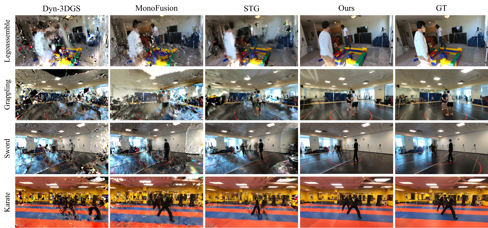
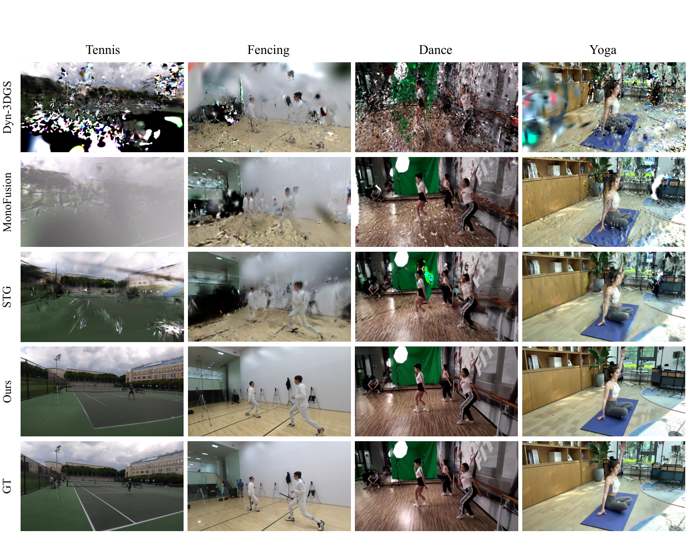
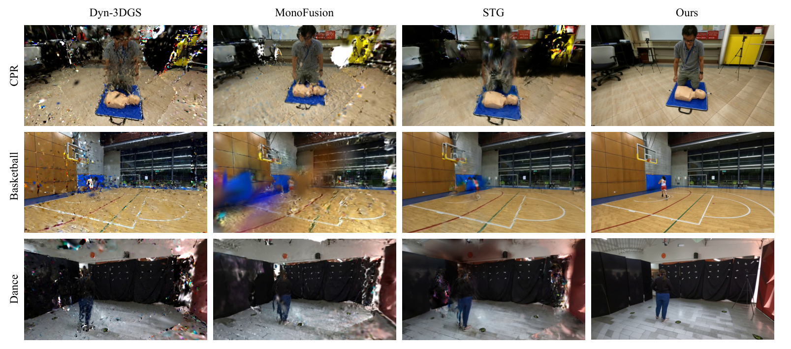
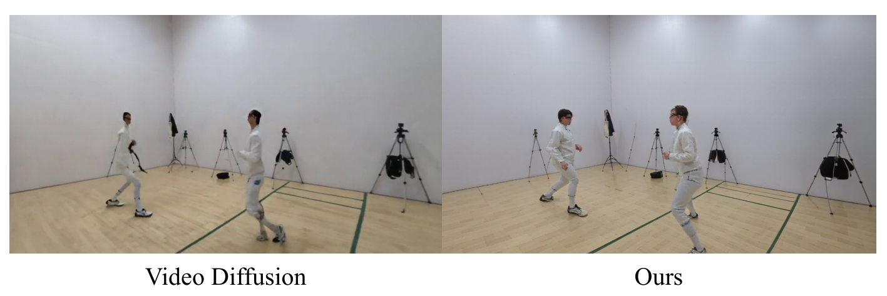
为验证生成先验没有破坏已观测内容,论文把每个评测像素分类为 seen / unseen:把像素用估计深度反投影到 3D,再投影进每台训练相机;若投影深度与训练相机深度图在 5% 内匹配(即该表面从该训练视角可见且未被遮挡),则标为 seen。
| 类别 | PSNR ↑ | SSIM ↑ | 时序 L1 ↓ |
|---|---|---|---|
| Seen(已观测) | 20.88 | 0.677 | 0.059 |
| Unseen(未观测) | 18.55 | 0.556 | 0.178 |
论文把递归增强模块泛化地应用到 baseline 上,验证它不是为本方法定制的:
| 方法 | 原始 | + 增强(本文) | ||||
|---|---|---|---|---|---|---|
| PSNR↑ | SSIM↑ | LPIPS↓ | PSNR↑ | SSIM↑ | LPIPS↓ | |
| Dyn-3DGS | 16.68 | 0.441 | 0.563 | 17.66 (+0.98) | 0.522 (+0.081) | 0.396 (−0.167) |
| MonoFusion | 17.06 | 0.435 | 0.552 | 17.68 (+0.62) | 0.480 (+0.045) | 0.383 (−0.169) |
| STG | 17.21 | 0.522 | 0.477 | 17.72 (+0.51) | 0.542 (+0.020) | 0.380 (−0.097) |
论文又造了一个「公平性对照」:给 baseline 也用 GEN3C 在 30 个时间步的稠密监督(481 × 30 张图,即 30 倍于本文的扩散预算),看它们能否追上:
| 方法 | PSNR ↑ | SSIM ↑ | LPIPS ↓ | 前景 PSNR ↑ |
|---|---|---|---|---|
| Dyn-3DGS(4 视角) | 16.57 | 0.421 | 0.486 | — |
| Dyn-3DGS + GEN3C | 17.05 | 0.581 | 0.549 | 15.09 |
| STG(4 视角) | 17.83 | 0.516 | 0.426 | — |
| STG + GEN3C | 18.72 | 0.630 | 0.377 | 17.14 |
| Ours(无增强) | 20.39 | 0.657 | 0.286 | 18.08 |
| 策略 | 准确率 ↑ | 精确率 ↑ | 失败原因(论文要点) |
|---|---|---|---|
| 仅空间邻近度 | 93.3% | 100% | 当深度不可靠时失效 |
| 仅姿态相似度 | 81.4% | 99.7% | 当人们做相似动作时失效 |
| Ours(混合) | 97.8% | 100% | 两个线索互补,取得零误检 |
| 配置 | PSNR ↑ | SSIM ↑ | LPIPS ↓ |
|---|---|---|---|
| 4 视角 baseline | 18.13 | 0.567 | 0.429 |
| + ViewSynth(稠密视图合成) | 20.54 | 0.661 | 0.273 |
| + Enhance(完整,本文) | 20.44 | 0.649 | 0.198 |
| 配置 | PSNR ↑ | SSIM ↑ | LPIPS ↓ | Warp-L2 ↓ |
|---|---|---|---|---|
| w/o Injection | 20.44 | 0.654 | 0.194 | 0.119 |
| w/ Injection | 20.44 | 0.649 | 0.198 | 0.092 |
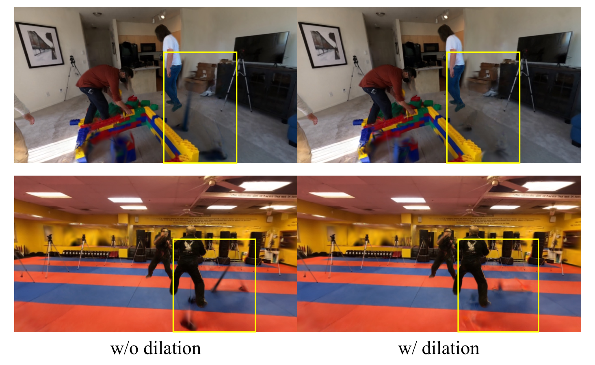
去掉它(直接用逐视角融合的 SMPL)后,不准确的姿态使高斯与实际人体区域错位,渲染出模糊或半透明的身体部位(Figure S5)。这是人体侧最重要的单组件。
抖动以「所有演员所有帧的关节加速度均值」度量:
| 配置 | 平移(mm/f²)↓ | 姿态(°/f²)↓ |
|---|---|---|
| 无平滑 | 2.74 | 40.67 |
| 有平滑 | 1.29 | 13.95 |
姿态抖动降幅(40.67→13.95,约 −66%)远大于平移(−53%);去掉后在渲染视频里表现为闪烁。
| 配置 | PSNR ↑ | SSIM ↑ |
|---|---|---|
| 完整流水线 | 20.11 | 0.654 |
| + 掩码腐蚀 5 / 10 px | 20.04 / 20.03 | 0.653 / 0.653 |
| + SMPL 噪声 $\sigma$=3° / 5° | 20.02 / 19.97 | 0.652 / 0.651 |
| + 2D 关键点噪声 $\sigma$=3 / 5 px | 19.99 / 19.91 | 0.651 / 0.649 |
| 方法 | 年份 | 输入假设 | 场景表示 | 监督信号 | 训练数据 | 训练时长 | 推理耗时 | 显存 | 关键指标 | 开源 |
|---|---|---|---|---|---|---|---|---|---|---|
| Dyn-3DGS | 3DV 2024 | 稠密多视角 | 变形高斯(带跟踪) | 光度 + 跟踪 | 合成动态场景 | — | — | — | 360° 场景 15.32–18.00 dB | 是 |
| MonoFusion | ICCV 2025 | 稀疏 4D(单目融合);仍依赖邻居相机共享可见性 | 单目融合 4D 表示 | 光度 | — | — | — | — | 360° 场景 15.44–20.09 dB | 是 |
| STG | CVPR 2024 | 稠密多视角 | 时空高斯特征泼溅 | 光度 | — | — | — | — | 360° 场景 16.44–18.84 dB | 是 |
| GEN3C(仅作对照) | CVPR 2025 | 单目视频 + 相机控制;静态场景假设 | 视频(无显式几何) | 视频扩散 | 大规模视频 | — | — | — | 人体 PCK@0.05 仅 55.6%;直接渲染 19.05 / 0.612 / 0.329 | 是 |
| AHOY! | ECCV 2026 | 单目 in-the-wild 视频,重度遮挡:极稀疏(1 视角) | 完整可动画 3DGS avatar | 幻觉视频(身份微调扩散)+ FLAME 头部 | 自采 50 段 YouTube / BEHAVE | 粗 400k + 完整 500k 迭代;GPU 未给 | 未给出 | 未给出 | BEHAVE 24.12 / 22.81 dB | 否 |
| Flex4DHuman | 2026-06 | 1 到 N_ref 段参考视频 + 相机位姿;无几何先验 | 多视角视频 → FreeTimeGS | flow matching | DNA-Rendering 1,038 序列 | 32 × H100,105k 迭代 | 未给出 | 未给出 | DNA-Rendering 25.44 dB(48 视角密集设定) | 仅 README |
| StudioRecon(本文) | SIGGRAPH 2026 | 4 台低重叠(70° 最近邻)、未标定相机,多人遮挡 | 解耦:背景静态高斯 + 逐人动态高斯 | 背景用合成视角(真值视角加权)+ 人体用原始视频 + SMPL 几何约束 | EgoHumans / Harmony4D / Mobile Stage / SelfCap | 背景 7k + 人体 10k 迭代 | 视图合成 50 min + 背景 30 min + 人体 40 min + 增强 3.3 s/帧 | 单张 A6000 可跑(具体显存未给出) | 360° 18.58–22.75 dB;180° 21.63–21.74 dB | 是(完整 Python 源码,非商用) |
把生成模型只用在它擅长的静态背景,把参数化人体模型用在动态人体。Table S3 的 55.6% vs 93.1% 直接量化了这个分工的必要性——不是信仰问题,是测出来的。
背景优化对真值视角加权(最高 3×),增强模块以真值为参考帧。两个设计都建立在「生成内容只在没有真值的地方才可信」这一判断上。Table 6 的 seen/unseen 分析(20.88 vs 18.55 dB)验证了它生效。
Table S5 把 baseline 放到 30 倍扩散预算下比较,以此隔离「方法差异」与「资源差异」。这种对照设计在本库见过的论文里属于上乘。
| 范式 | 代表方法 | 核心先验 | 局限 |
|---|---|---|---|
| 稠密多视角 4D 重建 | Dyn-3DGS、4DGS、STG、FreeTimeGS | 大量重叠视角的光度监督 | 需要稠密相机;稀疏时崩 |
| 稀疏视角 4D 重建 | DNGaussian、DropGaussian、MonoFusion | 邻居相机共享可见性 + 深度正则 | 低重叠(90°)时仍留伪影 |
| 视频扩散直接合成新视角 | GEN3C、ReCamMaster、CAT4D | 大模型学到的场景语义先验 | 对动态人体几何不一致(PCK 55.6%) |
| 多视角视频扩散绕过几何先验 | Flex4DHuman、4DAnyone | 相对相机位姿 / 骨架条件 → 稠密多视角 | 需要较多视角;一致性完全压给生成模型 |
| 生成当补全器(单目+遮挡) | AHOY! | 身份微调视频扩散 + map/LBS 解耦 | 极慢;质量受扩散上界限制;未开源 |
| 人机分工(背景交生成 / 人体交几何) | StudioRecon | 互补先验 + 解耦 + 可信度加权 + 时序一致增强 | 离线慢;人体表达受 SMPL 封顶;阴影/手持物不处理 |
判断基准:本库主线为单卡 RTX 3090(24GB)、WSL2、12–16 路中等稀疏可控场景、目标人体。StudioRecon 的设定(4 台低重叠、未标定相机、多人遮挡)比我们困难得多。
| 维度 | StudioRecon 的情况 | 与我们的匹配度 |
|---|---|---|
| 相机数量 | 4 台(我们 12–16 台) | 我们的条件更宽松——它的方法能在 4 台上跑,理论上我们只会上限更高 |
| 重叠度 | 最近邻夹角 70°(极低重叠) | 我们重叠更好,相机几何更稳 |
| 标定 | 完全不假设预标定(Pi3 前馈估计) | 我们已有 COLMAP,几何基准更可靠 |
| 显存 | 单张 A6000(48GB)可跑,具体占用未给 | 存疑——A6000 是 48GB,3090 是 24GB。虽然论文没说占满,但无法确认 24GB 是否够 |
| 耗时 | 端到端约 130 分钟 / 场景(单卡) | 可接受(我们做的是离线重建),但比我们的 COLMAP+HYPIR 链路慢得多 |
| 开源 | 完整 Python 源码 + configs + scripts + 多环境安装文档 | 可实际采用——这五篇里唯一可落地的 |
| 许可 | 非商用研究/评估用途 | 研究用途可用,商业化需另行处理 |
| 人体表达 | SMPL 表面 + LBS + 时间 MLP 残差;不含手持物/表情 | 与我们「人脸细节增强 + 手部」的目标存在缺口 |
| 多人处理 | 逐人动态高斯 + 跨视角身份关联(97.8%) | 高价值——我们的多人场景正需要「跨视角 ID 映射 + track 去重」,它的 0.9 空间 + 0.1 姿态亲和度方案可以直接借用 |
| 长视频 | 121 帧 / 序列 | 比我们的需求短,但可扩展(逐帧递归增强是流式的) |
[高优先级] 增强模块与重建模块是「单向串联」的,缺少反馈。
问题:流水线顺序是「重建 → 增强」,增强的输出从不回流到重建。唯一的例外是背景的迭代精修(第 3,500 迭代)——但那只是把增强过的渲染当作额外监督,并没有形成真正的闭环。论文自己证明了增强的局限:「当底层 3D 表示因视角覆盖不足而退化时,增强只能改善表面外观,不能纠正结构错误」(§13.7)。
佐证:Table S4 显示增强后 baseline 的 PSNR 仍在 17.66–17.72,远低于完整流水线的 20.44;LPIPS 虽然降了 20–31%,但结构错误没被修正。
改进建议:把「增强输出 → 重建监督」做成多轮闭环(类似背景的迭代精修,但推广到人体),让人体重建也能从增强后的图像里获得视角覆盖以外的监督。这可能是本篇最便宜的一次性能提升。
[高优先级] 阴影与手持物是完全缺失的两类内容,且都被归为 future work。
问题:作者自陈两条:① 演员手持的动态物体在渲染输出中直接消失(附录 I,Figure S7),因为它们在 SMPL 表面之外;② 在 $t{=}0$ 被烘焙进静态背景的阴影不跟随人体运动(Figure S8)。
为什么这是高优先级:这两件事不是「细节」而是物理一致性的硬约束。篮球消失、人的影子不动,会立刻破坏沉浸感——而这正是这类方法宣称的服务目标(娱乐、体育直播、虚拟制作)。
改进建议:① 手持物可以复用「解耦」思想——再加一路「动态物体高斯」,由多视角三角化初始化(论文已有这套工具);② 阴影可以用一个「动态阴影场」处理,或者更简单地在 $t{=}0$ 就把阴影 mask 掉,让背景不含烘焙阴影,再由渲染时实时加。
[中优先级] 增强模块的超参在论文、README、代码之间三方不一致(见 §12.1)。
问题:论文附录 E 写 $t{=}200$、$\alpha=0.3$;README 与代码写 $t{=}180$、$\alpha=0.5$;而 recursive.py:1169 的函数默认值又是 0.2。这意味着论文里没有明确交代最终配置,而这一配置对时序一致性的影响是直接可测的(Warp-L2 从 0.119 到 0.092)。
改进建议:在论文或 README 里给一张「$t$ × $\alpha$ × $w_{total}$ 的敏感度表」,并明确指出哪个是论文实验用的配置。这类超参在复现时最容易被忽略,而恰恰影响观感。
[中优先级] 缺少 2–3 台相机时的表现,而这决定了方法的适用范围下界。
问题:论文全程固定 $N{=}4$。但「4 台」这个数字是硬门槛还是软门槛?在 $N{=}3$ 时跨视角三角化的鲁棒性会怎样(自由度更少)?$N{=}2$ 时是否退化成不可能?论文没有回答。
改进建议:补一组 $N=2/3/4/6$ 的对照,给出「相机数 × PSNR」曲线。这既是科学问题,也直接决定方法可用在什么场合。
[中优先级] 面部与手部被作者列为限制,但没有量化差多少。
问题:Limitations 第一条写「面部与手部等细节仍然困难」,但所有指标都是全图/前景平均,没有拆出面部区域或手部区域单独报告。这导致:读者无法判断这个限制有多严重——是「轻微模糊」还是「完全不可用」?
改进建议:把评测像素按语义分区(面部 / 手部 / 躯干 / 背景)分别报告指标。这与它已有的 seen/unseen 分析是同一套思路,扩展成本很低。
[中优先级] 消融实验的代码被明确排除在发布之外。
问题:README 原话:「Ablations, application scripts, and experiment helpers are intentionally not part of this release.」也就是说,论文里那 5 张消融表(Table 3/4/5/6/7)**无法通过这套代码复现**。
改进建议:至少把消融用的 config 变体随仓库放出(它们只是参数组合,不含额外代码)。这不增加多少维护成本,但能让方法学证据变得可验证。
[中优先级] 多环境依赖是最实际的部署障碍。
问题:README 明确写「Stages run in separate conda environments because the upstream projects pin incompatible Torch/CUDA versions」。这意味着用户需要维护多套 Python 环境,并处理跨环境的数据传递。
改进建议:提供一个容器化方案(Dockerfile / Apptainer),或者把差异极大的组件收敛到一个兼容的 Torch 版本上。对任何想复现的人来说,这是第一个会卡住的点。
[中优先级] 显存占用始终未报告。
问题:论文只给了「单张 A6000」这一条信息。A6000 是 48GB,而消费级卡普遍 24GB。读者无法判断 24GB 是否够——而背景高斯优化要在 481 个 1280×704 视角上跑 7,000 迭代,这不是小开销。
改进建议:在 Table S1 的耗时列旁加一列峰值显存。这是一个几乎零成本的补充。
[低优先级] 训练迭代数的口径在论文与代码之间不统一(见 §12.2)。
问题:论文是「背景 7,000 + 人体 10,000」,代码是统一 15_000,三者互不对应。
改进建议:在 configs/ 里明确标注哪套配置对应论文的哪张表。
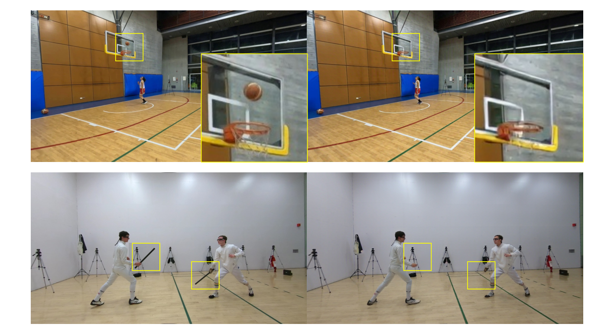
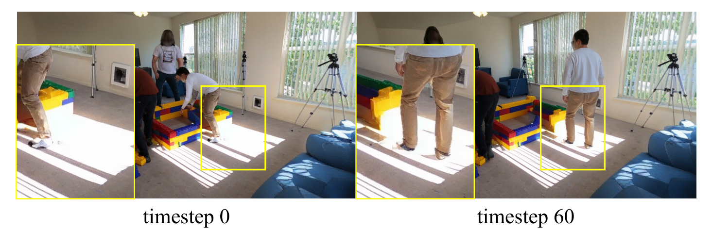
| 优先级 | 改进点 | 理由 |
|---|---|---|
| [高] | 增强与重建缺少闭环反馈 | 论文自己证明了增强不能纠正结构错误,而闭环是唯一可能突破这个上界的路径 |
| [高] | 阴影与手持物缺失 | 物理一致性的硬约束,直接破坏沉浸感 |
| [中] | 增强超参三方不一致 | 直接影响时序观感,且复现时最易忽略 |
| [中] | 缺少 N=2/3 的适用下界 | 决定方法的适用范围 |
| [中] | 面部 / 手部限制未量化 | 读者无法判断限制的严重程度 |
| [中] | 消融代码未发布 | 方法学证据不可验证 |
| [中] | 多环境依赖 | 复现的第一道门槛 |
| [中] | 显存未报告 | 决定能否在消费级卡上跑 |
| [低] | 迭代数口径不统一 | 影响复现准确度,但不影响方法正确性 |
StudioRecon 处在「路线 C:生成当补全器」里的一个保守位置:它与 AHOY! 形成一对鲜明的对照——
| 维度 | StudioRecon | AHOY! |
|---|---|---|
| 生成模型用在 | 只用于背景(静态、几何要求低) | 用于人体未观测区域(动态、几何要求高) |
| 人体几何来源 | SMPL + 多视角三角化(强约束) | SMPL 骨架 + 学习式高斯图(约束较弱) |
| 输入 | 4 路多视角(低重叠) | 单目(1 路) |
| 输出 | 背景 + 多人动态高斯的场景 | 单个可动画 avatar,可合成进 3DGS 场景 |
| 不一致处理 | 用真值参考帧 + 光流一致性注入抑制 | 用 map/LBS 解耦主动吸收 |
| 开源 | 完整源码 | 无 |
| 速度 | 约 130 分钟 / 场景(离线) | 更慢(未给出数字) |
两条路线代表了「生成先验该用在人体的哪一部分」这个问题的两种答案。StudioRecon 的答案是「一点都不要用」,AHOY 的答案是「没拍到的地方全都用」。PCK 那组数据支持前者在几何上的可靠性,但 AHOY 能处理后者才有的场景(单目、重度遮挡)。对使用者来说,选择的依据是「你的观测够不够」而不是「哪个方法更好」。
Minhyuk Hwang*(共同一作,github.com/sisyphm)· Sangmin Kim*(共同一作)· Seunguk Do · Daneul Kim · Jaesik Park。全部来自 Seoul National University。
经费来源(致谢):IITP(韩国政府 MSIT)资助,含 AI Graduate School Program - Seoul National University(5%)、AI star Fellowship Support Program(45%)、以及「面向扩展现实的真实世界多空间融合与 6DoF 自由视点沉浸式可视化」项目(50%)。三个项目合计 100%,且明确给出比例——这种披露方式很少见。
github.com/sisyphm/StudioRecon 存在,7 stars,语言 Python,仓库约 1836 KB,pushed 2026-07-28。根目录含 studiorecon/(34 个 Python 文件)、configs/、scripts/、docs/(INSTALL / CHECKPOINTS / DATASETS / DATA_LAYOUT / ARCHITECTURE / THIRD_PARTY 六份文档)、tests/、third_party/、pyproject.toml、LICENSE.md(非商用)、.gitmodules。是一份结构完整的官方实现。会议状态亦由官方 README 与 arXiv abs comments 双重确认:SIGGRAPH Conference Papers '26。